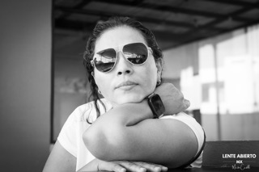
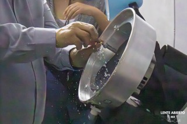
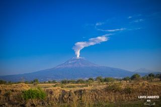
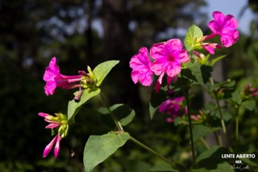
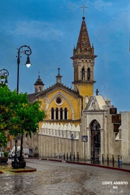

Martín Castillo es un fotógrafo morelense y creador del proyecto visual Lente Abierto MX. Su camino en la fotografía inició hace un año tras el deseo de inmortalizar un momento profundamente significativo: la celebración de los XV años de su hija. Aquella primera experiencia con su cámara encendió una pasión indispensable por observar el mundo y marcó el comienzo de un proceso de constante aprendizaje.
Profesionalmente se desempeña en el sector salud —enfocado en el área de la salud visual—, un ámbito donde ha cultivado la disciplina, el compromiso y una minuciosa atención al detalle; valores que traslada a su propuesta fotográfica. Convencido de que la mirada se perfecciona compartiendo, participa activamente en clubes, talleres y recorridos urbanos para enriquecer su propuesta técnica y conceptual.
A través de Lente Abierto MX, Martín documenta la belleza de lo cotidiano: desde la imponente naturaleza de Morelos y la arquitectura de sus calles, hasta la precisión de los oficios y la calidez de los retratos —encontrando en su esposa, futura optometrista, su principal fuente de inspiración—. Su trabajo busca capturar imágenes honestas que transmitan emociones y narren historias auténticas a través de la luz, la composición y el instante preciso.

1. Mirada Interior
Categoría: Retrato
Medidas impresas: 30 x 45 cm
Equipo: Canon EOS R50
"Una pausa reflexiva donde el mundo exterior, capturado en el reflejo de sus lentes, se rinde ante la quietud de su propia mirada. Este retrato busca la esencia detrás del filtro."
Técnica: Retrato monocromático en plano medio cerrado. Utiliza un alto contraste tonal para acentuar las texturas de la piel y el cabello, contrastando con la superficie lisa de los lentes de sol. La composición triangular que forman los brazos apoyados crea una base estable que dirige la mirada del espectador directamente al rostro de la protagonista.

2. La Danza de la Precisión
Categoría: Documental / Oficio
Medidas impresas: 30 x 40 cm
Equipo: Canon EOS R50
"El instante exacto donde la fuerza bruta y el agua se convierten en una caricia de precisión. Una oda a la labor invisible que talla la claridad con la que el mundo vuelve a verse."
Técnica: Fotografía de acción/documental a alta velocidad. Utilizando un ISO elevado, se logra congelar el movimiento dinámico de las gotas de agua al impactar con la biseladora óptica. El enfoque de precisión en las manos y la textura del metal en movimiento resalta la labor técnica y manual de la óptica.

3. El Coloso de la Tierra Amada
Categoría: Naturaleza / Paisaje
Medidas impresas: 40 x 60 cm
Equipo: Canon EOS R50
"Majestuoso y vigilante, 'Don Goyo' respira sobre Morelos. Un recordatorio de la fuerza ancestral y la belleza imponente que define nuestro horizonte morelense."
Técnica: Paisaje natural de gran formato capturado a luz de día. La composición se basa en la regla de tercios para equilibrar la tierra, el volcán y la fumarola con el vasto cielo azul. El alto contraste cromático entre la calidez del terreno seco y la atmósfera fresca del cielo profundo potencia la profundidad y el volumen de la montaña.

4. El Latido Magenta del Bosque
Categoría: Naturaleza / Botánica
Medidas impresas: 30 x 40 cm
Equipo: Canon EOS R50
"Delicada pero vibrante, esta flor brota de la sombra del bosque de Cuernavaca como un latido de vida. Un momento de luz capturado para recordar la belleza frágil de nuestro entorno natural."
Técnica: Estudio botánico en primer plano con baja profundidad de campo. Mediante una subexposición deliberada del fondo (clave baja) y una luz natural lateral, se logra aislar el sujeto y potenciar la vibrancia cromática del color magenta de los pétalos, resaltando su textura translúcida sobre el entorno oscuro.

5. Ecos de Piedra y Lluvia
Categoría: Arquitectura / Urbana
Medidas impresas: 30 x 45 cm
Equipo: Smartphone Xiaomi
"Un instante de calma tras la lluvia sobre las calles empedradas de Cuernavaca. El Templo de San José se alza como un faro de historia y fe en el corazón de nuestra ciudad."
Técnica: Fotografía urbana matutina con clima húmedo, capturada con smartphone. Aprovecha la textura del empedrado mojado para crear reflejos que guían la perspectiva vertical de la calle hacia la torre y la fachada neogótica del templo. La luz suave y difusa de la mañana ayuda a resaltar la pátina histórica de la arquitectura.